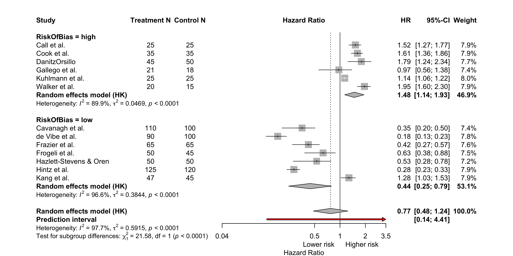
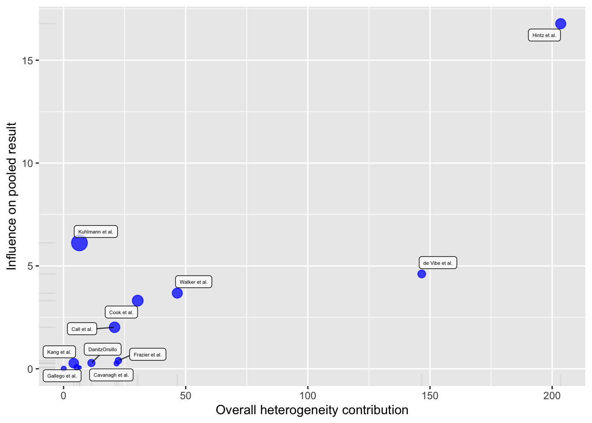
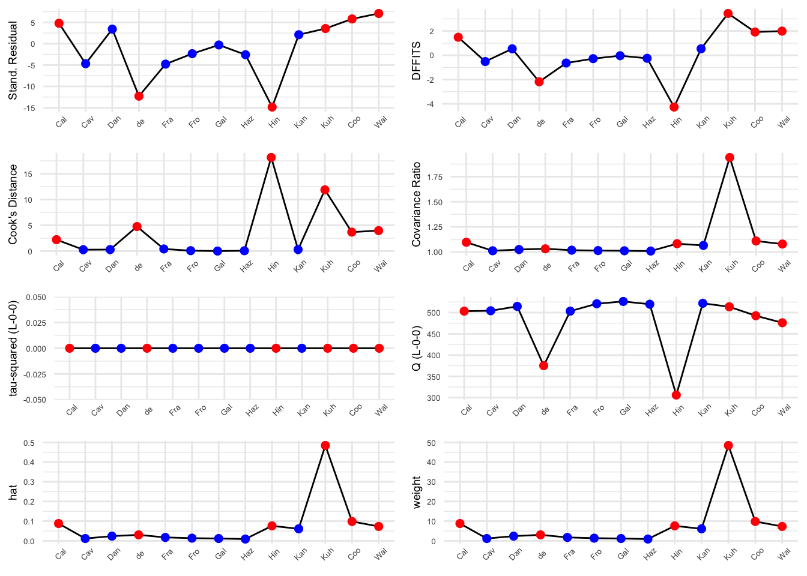
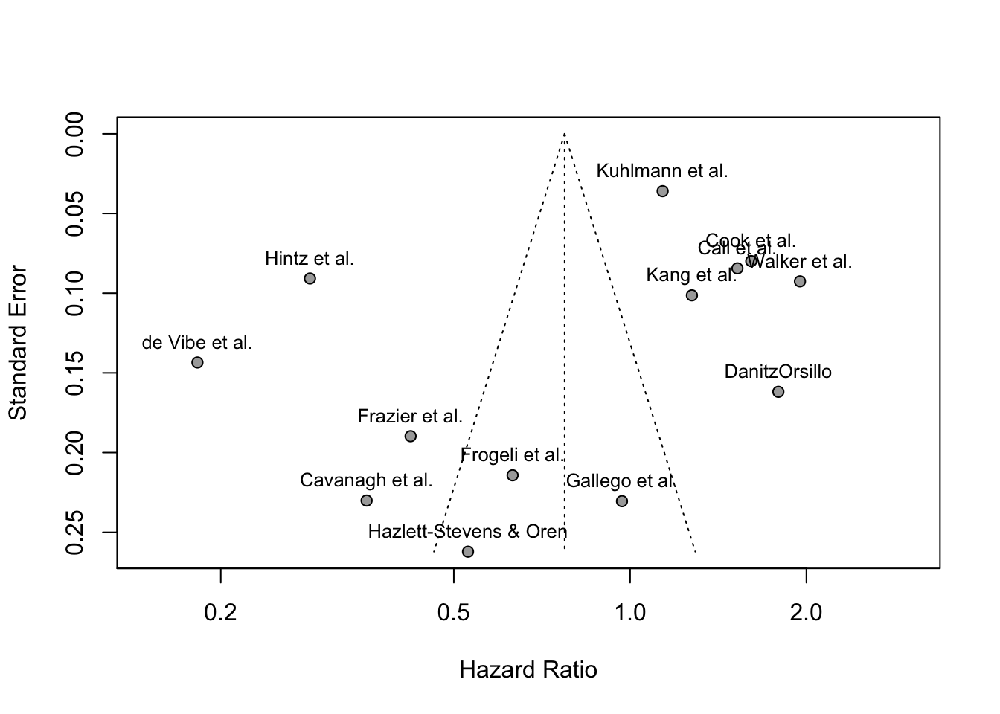

This chapter shows how to carry out a meta-analysis when the papers report effect sizes. The meta-analysis can be performed using the effect sizes, such as Standardised Mean Differences (SMD), Odds Ratios (OR), Risk Ratios (RR), or Hazard Ratios (HR). This example will perform a meta-analysis on papers that have reported HR effect sizes together with their 95% confidence intervals.
7.1 Import the example data file & prepare it for analysis
Click to see guidance to import and prepare the data
Download the example Excel file ThirdWave.xlsx from Canvas and save it to your working directory (remember to set the location where you save this file as your working directory in RStudio).
This shows the Hazard Ratio (HR), the standard error (seHR), the lower and higher 95% confidence intervals (lower95CI & higher95CI), and the size (N) of the control and treatment groups. It also identifies the risk of bias assessment for each paper which we will use as sub-groups.
Import the file to R and store it as a dataframe object called meta.ES. Take a look at the arrangement of the data in the dataframe below:
meta.ES <-import("ThirdWave.xlsx")meta.ES
1
Imports the excel file from your working directory and stores it as an object called meta.ES
2
View the meta.ES dataframe
Author
HR
seHR
lower95CI
higher95CI
RiskOfBias
N.Control
N.Treat
TypeControlGroup
ModeOfDelivery
Call et al.
1.5248300
0.2608202
1.2748300
1.7748300
high
25
25
WLC
group
Cavanagh et al.
0.3548641
0.1963624
0.2048641
0.5048641
low
100
110
WLC
online
DanitzOrsillo
1.7911700
0.3455692
1.2411700
2.3411700
high
50
45
WLC
group
de Vibe et al.
0.1824552
0.1177874
0.1324552
0.2324552
low
100
90
no intervention
group
Frazier et al.
0.4218509
0.1448128
0.2718509
0.5718509
low
65
65
information only
online
Frogeli et al.
0.6300000
0.1960000
0.3800000
0.8800000
low
45
50
no intervention
group
Gallego et al.
0.9685300
0.2246641
0.5585300
1.3785300
high
18
21
no intervention
group
Hazlett-Stevens & Oren
0.5286638
0.2104609
0.2786638
0.7786638
low
50
50
no intervention
book
Hintz et al.
0.2840000
0.1680000
0.2340000
0.3340000
low
120
125
information only
online
Kang et al.
1.2750682
0.3371997
1.0250682
1.5250682
low
45
47
no intervention
group
Kuhlmann et al.
1.1364000
0.1947275
1.0564000
1.2164000
high
25
25
no intervention
group
Cook et al.
1.6100000
0.3500000
1.3600000
1.8600000
high
35
35
NA
group
Walker et al.
1.9500000
0.3100000
1.6000000
2.3000000
high
15
20
NA
NA
Check the type of data in each column:
meta.ES |>summarise_all(class)
1
See the types of data in each column
Author
HR
seHR
lower95CI
higher95CI
RiskOfBias
N.Control
N.Treat
TypeControlGroup
ModeOfDelivery
character
numeric
numeric
numeric
numeric
character
numeric
numeric
character
character
We will want to create sub-groups based on risk of bias in the meta-analysis, so here we will convert the RiskOfBias variable to a factor:
You can see that the RiskOfBias variable is now a factor
7.2 The meta-analysis
(Ch4 Harrer et al.) This will use a random effects model using the imported effect size (HR) data stored in the meta.ES object and the metagen() function. The meta-analysis results are stored in an object called metaHR.
The line in the code sm = "HR" specifies that the effect size used is the Hazard Ratio. If the papers report different effect sizes, simply replace HR in the code with RR (risk ratio), OR (odds ratio) or SMD (standardised mean difference).
This data set has two sub-groups based on the risk of bias assessment: low or high. This meta-analysis will therefore analyse these separately as sub-groups as well as combining all studies. The code therefore has a line specifying ‘subgroup’ as the column in the data headed ‘RiskOfBias’.
Specifies the column that contains the lower 95% CI (‘lower95CI’)
3
Specifies the column that contains the higher 95% CI (‘higher95CI’)
4
Specifies the column with the paper citations
5
The dataframe containing the data
6
Specifies the effect size used. HR = Hazard ratio. Can replace with SMD, OR, RR effect sizes.
7
Specifies that the RiskOfBias column will be used as the sub-groups
Click to see the output of the meta-analysis
Review: Third Wave data
HR 95%-CI %W(random) RiskOfBias
Call et al. 1.5248 [1.2748; 1.7748] 7.9 high
Cavanagh et al. 0.3549 [0.2049; 0.5049] 7.4 low
DanitzOrsillo 1.7912 [1.2412; 2.3412] 7.7 high
de Vibe et al. 0.1825 [0.1325; 0.2325] 7.8 low
Frazier et al. 0.4219 [0.2719; 0.5719] 7.6 low
Frogeli et al. 0.6300 [0.3800; 0.8800] 7.5 low
Gallego et al. 0.9685 [0.5585; 1.3785] 7.4 high
Hazlett-Stevens & Oren 0.5287 [0.2787; 0.7787] 7.2 low
Hintz et al. 0.2840 [0.2340; 0.3340] 7.9 low
Kang et al. 1.2751 [1.0251; 1.5251] 7.9 low
Kuhlmann et al. 1.1364 [1.0564; 1.2164] 8.0 high
Cook et al. 1.6100 [1.3600; 1.8600] 7.9 high
Walker et al. 1.9500 [1.6000; 2.3000] 7.9 high
Number of studies: k = 13
HR 95%-CI t p-value
Random effects model (HK) 0.7729 [0.4820; 1.2395] -1.19 0.2577
Quantifying heterogeneity (with 95%-CIs):
tau^2 = 0.5915 [0.2916; 1.6280]; tau = 0.7691 [0.5400; 1.2760]
I^2 = 97.7% [97.0%; 98.3%]; H = 6.62 [5.79; 7.57]
Test of heterogeneity:
Q d.f. p-value
526.27 12 < 0.0001
Results for subgroups (random effects model (HK)):
k HR 95%-CI tau^2 tau Q I^2
RiskOfBias = high 6 1.4799 [1.1364; 1.9273] 0.0469 0.2166 49.42 89.9%
RiskOfBias = low 7 0.4414 [0.2458; 0.7928] 0.3844 0.6200 174.85 96.6%
Test for subgroup differences (random effects model (HK)):
Q d.f. p-value
Between groups 21.58 1 < 0.0001
Details of meta-analysis methods:
- Inverse variance method
- Restricted maximum-likelihood estimator for tau^2
- Q-Profile method for confidence interval of tau^2 and tau
- Calculation of I^2 based on Q
- Hartung-Knapp adjustment for random effects model (df = 12)
The output shows:
the effect sizes (HR) and 95% CIs for each study. Note that HR = 1 means no difference in risk in the treatment group compared with the control group. HR<1 means a reduced risk in the treatment group; HR>1 means an increased risk in the treatment group.
the overall effect size = 0.7729; it is not statistically significantly different from 1 (no effect) because P = 0.2577
There is high heterogeneity between the studies: I2 = 97.7%, Q p-value <0.0001
The 2 sub-group effect sizes are 1.4799 (high risk) and 0.4414 (low risk), and the two groups are statistically significantly different (P<0.0001)
7.3 The Forest Plot
(Harrer et al. Ch. 6) The forest plot presents the results of the meta-analysis graphically. It uses the meta-analysis results created above which were stored in an object called metaHR. The code is as follows:
This line will save the plot in a png file. Can also save as a pdf() or svg(). Harrer et al. Ch6.
2
Meta-analysis data is in the metaHR object.
3
sortvar specifies the order of papers in the plot; here ordered by Author. You can order them by TE (effect size) if you prefer the papers ordered by HR value in the plot.
The 1st line stores the plot in a png file so that it can be easily added to a document. You must start with the png() function where you can specify its size and resolution, and then end with dev.off.
The arguments within the brackets of the forest() function specify what you want to show in the forest plot and how it is to be displayed. You can change just about anything in the plot - see Harrer et al. Ch 6.
The forest plot looks like this:

You can see the analysis of the sub-groups easily (effect sizes of 1.48 and 0.44), as well as the overall effect size of 0.77. As mentioned above, the overall HR of 0.77 is not statistically significant. This is confirmed in the plot because the 95% CI range for the overall HR crosses 1 (= no difference in risk in control & treatment groups).
However, the high risk of bias sub-group had an HR of 1.48 which is statistically significant (the 95% CI does not cross 1); there is a statistically significant increase in risk in the treatment group compared with the control group. The low risk of bias group, on the other hand, had a statistically significant reduction in risk in the treatment group.
But heterogeneity is high in both sub-groups and overall. There is clearly a difference in the results reported by papers assessed to have low or high risk of bias. It is very difficult to draw firm conclusions overall because of this, unless one decides to exclude all ‘high risk of bias’ papers, and because of the high heterogeneity in both groups.
7.4 Influence Diagnostics
Influential cases have a large impact on the pooled effect or heterogeneity, regardless of how high or low the effect is. For example one very large study can have a high weight and may influence the pooled effect strongly. Outliers may be influential, but not always.
(a) To calculate influence diagnostics, use the InfluenceAnalysis() function (part of the dmetar package)
metaHR.infl <-InfluenceAnalysis(metaHR)
(b) Then create a Baujat plot: this detects studies that strongly influence heterogeneity. It shows the contribution of each paper to heterogeneity on x-axis & its influence (via leave-one-out method) on the pooled effect size on y-axis. Studies in the top right a have strong effect on heterogeneity and on the pooled effect.
plot(metaHR.infl, "baujat")
Click to see the Baujat plot

(c) A plot of the full influence diagnostics can be seen with the plot() function. Studies thought to be influential are displayed in red.
plot(metaHR.infl, "influence")
Click to see the influence diagnostics plot plot

Stand. residual: standardised residuals are the standardised deviation of the effect size of each paper from the pooled effect size.
DFFITS value: reports similar effect to Stand. residuals. Indicates how much the pooled effect changes when a study is removed, expressed in standard deviations (ie how much influence the paper has).
Cook’s distance: similar to DFFITS calculation, but only has +ve values. Large value = strong influence.
Covariance ratio: calculates how variance of the pooled effect size changes when a study is removed. Value <1 indicates that removing a study results in a more precise estimate of the pooled effect size.
Tau-squared (L-O-O means Leave one out) & Q values: Tau-square (variance of the pooled effect size) and Q heterogeneity values when each study is excluded.
Hat and Weight values: Weight = inverse of the variance of a study. HAT value is similar. Weight reflects the size of the study, assuming larger studies have smaller standard errors. Higher weight = greater precision of a study. Weights are used to calculate pooled effect size.
7.5 Publication Bias
Publication bias occurs when studies, usually smaller ones, are not published because they do not report statistically significant effects. Consequently, a meta-analysis could over-emphasise an effect if such papers are excluded. Publication bias tests attempt to estimate if there might be such missing papers. Here, we will create (1) a funnel plot, (2) perform Egger’s regression test and (3) Duval & Tweedie’s trim-and-fill test.
7.5.1 The Funnel Plot
To generate a funnel plot for the metaHR object that stores the results of the meta-analysis:
optional: use xlim() if you want to change the range on the x-axis
3
To add labels to each study
4
The number indicates the position of the labels. 3 means centered.
Click to see the funnel plot

You can see that there are a lot of studies that are outside of the expected HR range for studies of their size, ie many studies have more extreme HR results than expected, both lower and higher. The plot is reasonably symmetrical, but has signs of possible asymmetry - the following analyses will assess whether or not there is a risk of missing studies.
7.5.2 Egger’s Regression
Assesses funnel plot symmetry. If the funnel plot is symmetrical, it suggests that there are no missing studies. In this case, metaHR has subgroups. Egger’s regression test cannot be performed on a meta-analysis with subgroups. So, I will re-do the above meta-analysis without the subgroups and store it in another object called metaHR.Egg:
and then do the Egger’s regression test using the new meta-analysis without sub-groups (metaHR.Egg):
metabias(metaHR.Egg, method.bias ="linreg")
Click to see Egger’s Regression test output
Review: Third Wave data
Linear regression test of funnel plot asymmetry
Test result: t = -1.23, df = 11, p-value = 0.2431
Bias estimate: -3.9737 (SE = 3.2217)
Details:
- multiplicative residual heterogeneity variance (tau^2 = 42.0303)
- predictor: standard error
- weight: inverse variance
- reference: Egger et al. (1997), BMJ
P>0.05 means the data is symmetrical, there do not appear to be any missing studies.
7.5.3 Duval & Tweedie’s trim-and-fill
If there is asymmetry, it imputes ‘missing’ studies and adds them until symmetry is achieved. Assumes there are small studies that are missing. It re-does the meta-analysis and estimates pooled effect size as if all studies had been included.
tf.HR <-trimfill(metaHR)tf.HR
Click to see Duval & Tweedie’s trim-and-fill output
Review: Third Wave data
Number of studies: k = 17 (with 4 added studies)
HR 95%-CI t p-value
Random effects model (HK) 1.2214 [0.6921; 2.1555] 0.75 0.4662
Quantifying heterogeneity (with 95%-CIs):
tau^2 = 1.1936 [0.6502; 2.7999]; tau = 1.0925 [0.8063; 1.6733]
I^2 = 98.6% [98.3%; 98.8%]; H = 8.36 [7.57; 9.24]
Test of heterogeneity:
Q d.f. p-value
1118.53 16 < 0.0001
Details of meta-analysis methods:
- Inverse variance method
- Restricted maximum-likelihood estimator for tau^2
- Q-Profile method for confidence interval of tau^2 and tau
- Calculation of I^2 based on Q
- Hartung-Knapp adjustment for random effects model (df = 16)
- Trim-and-fill method to adjust for funnel plot asymmetry (L-estimator)
Here, you can see that the function has added 4 studies which has assumed have not been published. It has revised the overall effect size from 0.7729 (P=0.2577) originally to 1.2214 (P=0.4662)
You can then also re-do the funnel plot, using the tf.HR object that we have just created above, with the imputed studies added:
The ‘imputed’ studies that have been added are shown with open circles. You can see that the trimfill() function has added 4 studies with very high HR values, shifting the plot to the right and increasing the overall HR result to 1.2214.